For a long time, photography was defined as a process of recording. The photographer's job was only to find or make a moment and record it.
In the days of film, photographers bet almost everything on the moment they pressed the shutter. Post-processing could only be done in a few darkrooms, and the thinking at the time did not really accept editing photos afterward.
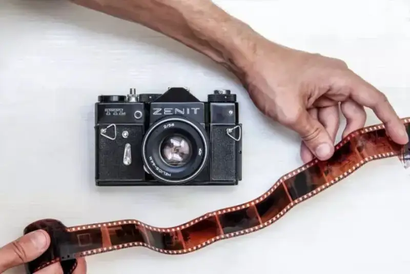
As a photographer, it is normal to be a perfectionist. We can even skip rest, meals, and sleep to get the one perfect photo.
Especially now that digital post-processing is common, you can try almost endless times before the shot, and then use editing to add the finishing touch. A RAW file saves the original information and has not been processed in any way. It has become the best partner of professional photographers.
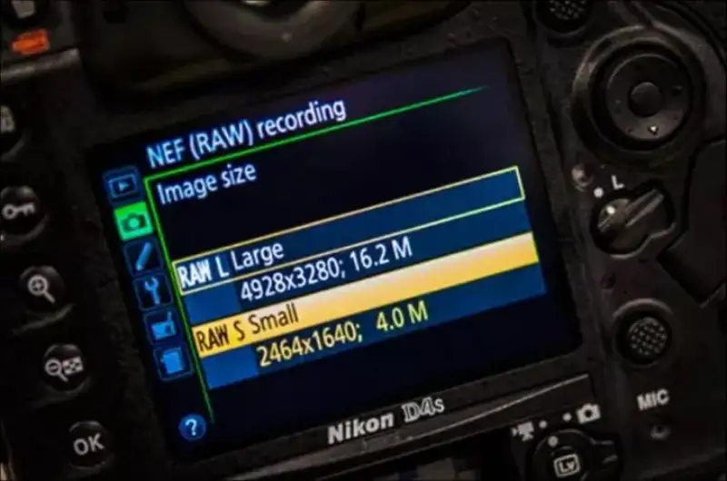
Nikon calls its RAW files NEF
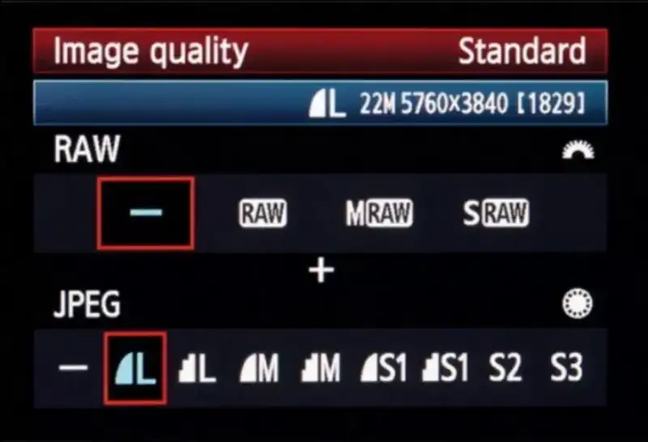
Canon RAW files can also use different compression
It is true that a JPEG file is more convenient than a RAW file. Most computers can open a JPG. It also saves space, and it reads and stores faster.
But the potential of RAW goes far beyond JPEG. Whether for commercial work or for beginners, a RAW file can rescue your photos and also add the finishing touch.
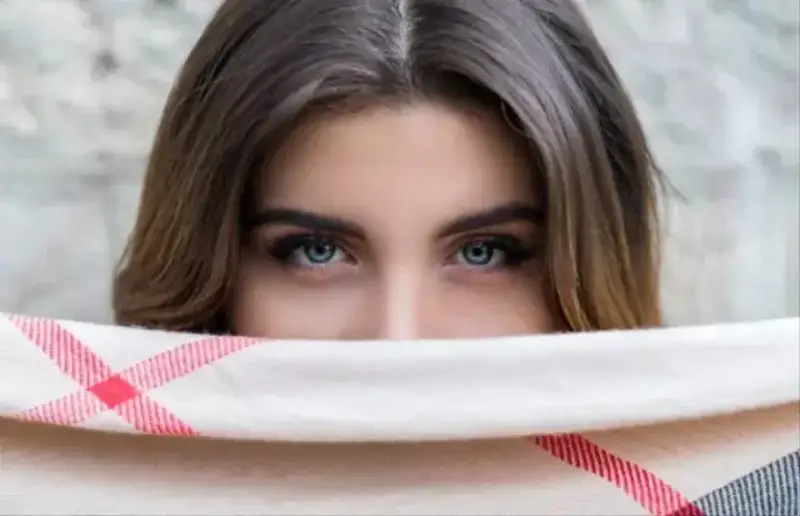
To ensure the highest image quality and detail, professional photographers usually choose RAW.
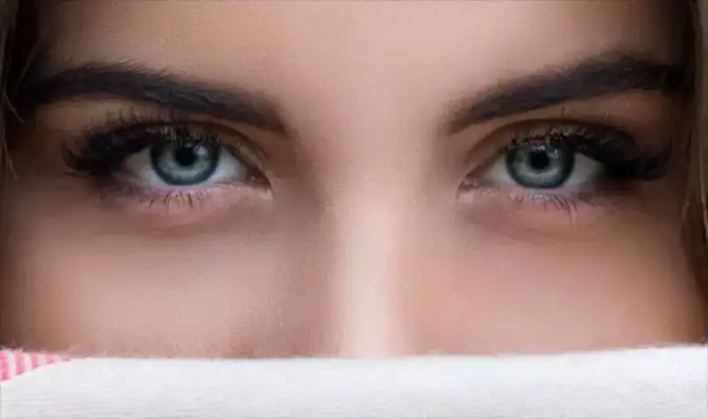
// What is a RAW file? //
A RAW file (the raw image file) is an original file that has not been processed in any way. It has a wider dynamic range, a richer image format and color space, and it keeps most of the image data from the shot.
The goal of a RAW file is to keep the loss of stored data to a minimum. It records the data from the sensor and the surrounding image exactly as the camera captured it.
The more common JPG is the opposite. After the camera gets the photo data, it adjusts exposure, color, and contrast using built-in algorithms, and it applies some compression. This leaves JPEG files with greater limits in post-processing.
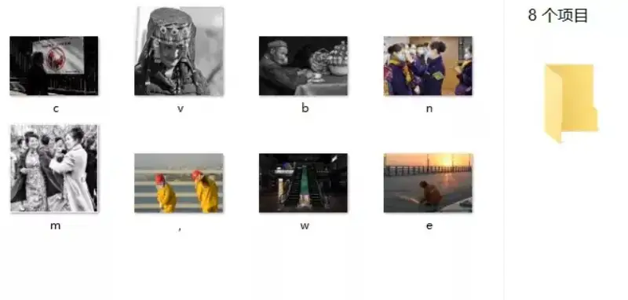
JPEG is a very popular image format. Most computer software can open a JPG file, but not all can open RAW.
A DNG file is the RAW format of the Ricoh GR. It is the raw exposure data before any image processing. Because it is not an image file but unprocessed image data, you need software made to handle RAW to open it.
JPEG is a compressible image format, and its quality changes with the level of compression.
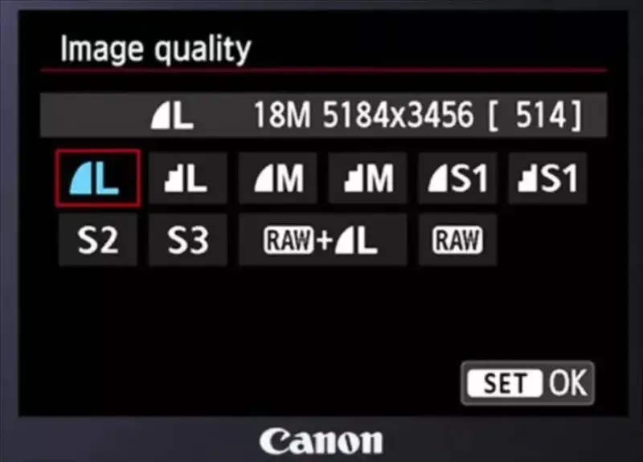
// Why use RAW? //
If JPEG gives us 'convenience,' then RAW gives us 'high quality.'
RAW lets you do major post-processing on a photo, such as adjusting white balance, exposure, color, and contrast. JPEG and even TIFF cannot match this.
And even if you change things in post-processing, the photo can return to its original state with no loss. You do not have to fear that an accidental save will damage the original file.
RAW stores the raw exposure data. When you process it, you can reset the camera settings from the shot, for example the white balance:
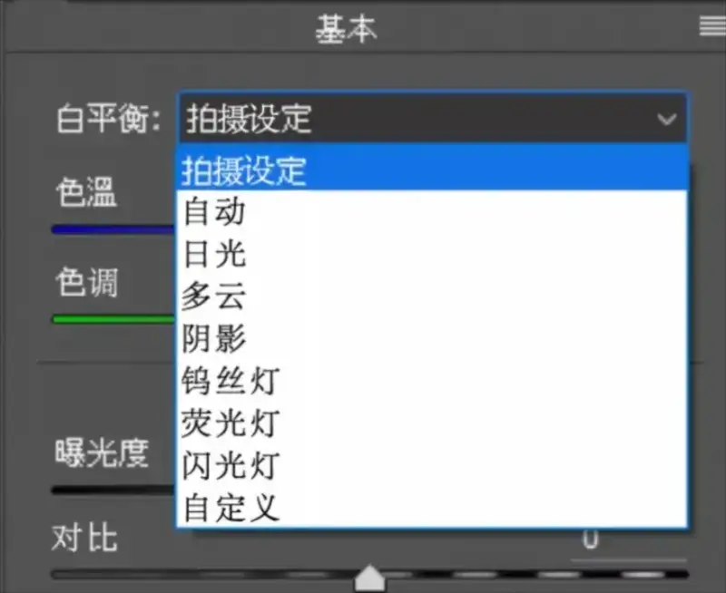
With RAW, the white balance setting on the camera body matters less, because you can change it later. The result is the same as setting it at the time of the shot.
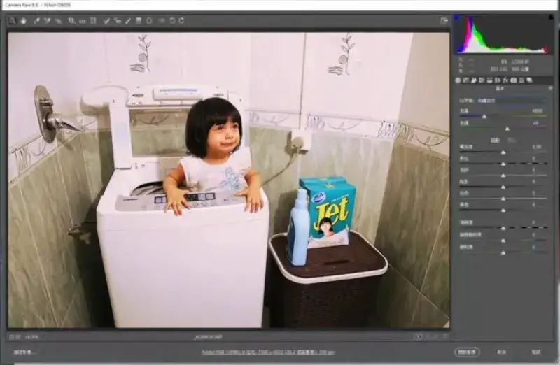
When you process RAW files, time is a very important factor. Because RAW files are large, they take more time to shoot and read.
And using RAW for unexpected post-processing naturally takes more time to work through. But after you see the data comparison of RAW and JPEG, I believe you will be drawn to the strong appeal of RAW.
Shooting setting (the camera setting at the time of the shot)
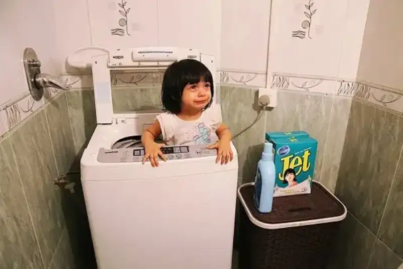
Daylight: note the slightly warm tone
The dynamic range stored in RAW is more than a hundred times greater than in JPEG, whether in 12-bit or 14-bit mode (RAW has 16,384 levels, versus 256 in JPEG).
In color, JPEG holds 16 million tones, but RAW holds as many as 68 billion tones. Because it has a much larger color space, the image flows more smoothly between tones, and it has more room for post-processing work such as stitching and distortion.
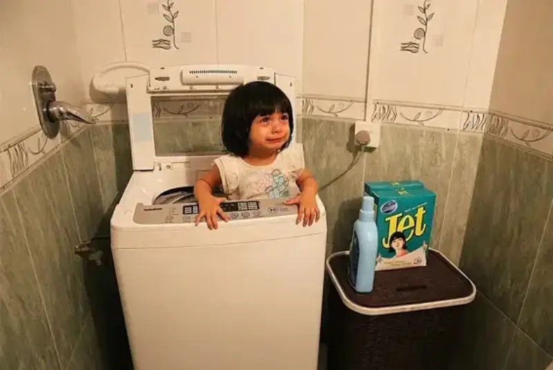
Shadows: clearly warmer
Tungsten light: clearly cooler
In short, RAW gives photographers a very good chance to fine-tune their work. Even beginners can learn it easily.
You may like the simple speed that JPEG gives you. But RAW is like walking into our own private darkroom, and building the work in our mind, stitch by stitch.
// RAW in practice: rescue an over-exposed shot //
Use Photoshop or Lightroom to process a RAW photo and re-expose it. Everyone makes mistakes. Even the most professional photographer has moments of wrong exposure.
In the past, photographers could only make limited adjustments in the darkroom. But today, with software such as Adobe Camera Raw, Lightroom, and Capture One Pro, adjusting exposure is easy.
This JPEG photo is over-exposed because the shutter speed was too slow, and it lost some detail in the highlights. Luckily, a RAW file was saved at the same time, so the highlights can still be rescued.

This is the RAW file of the same photo, opened in ACR. You can see it is over-exposed, and the detail in the bright areas is missing, just as in the JPEG.
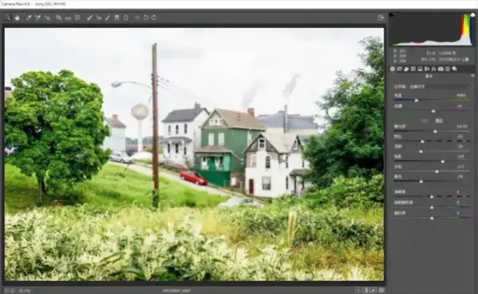
But a simple adjustment of exposure is enough...
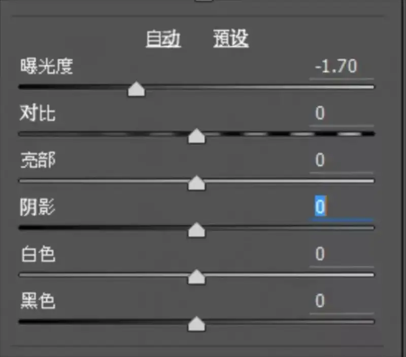
and all the highlight detail comes back:
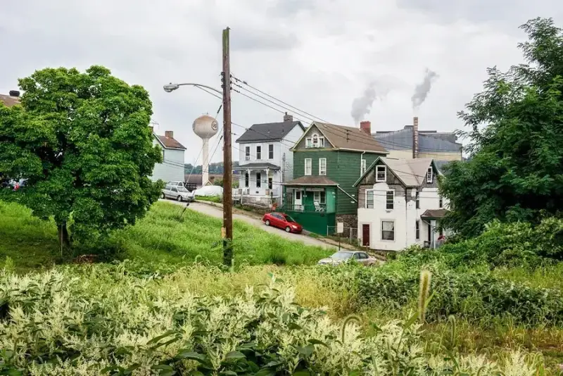
Because RAW records a great deal of detail, you can easily adjust it into an excellent image.
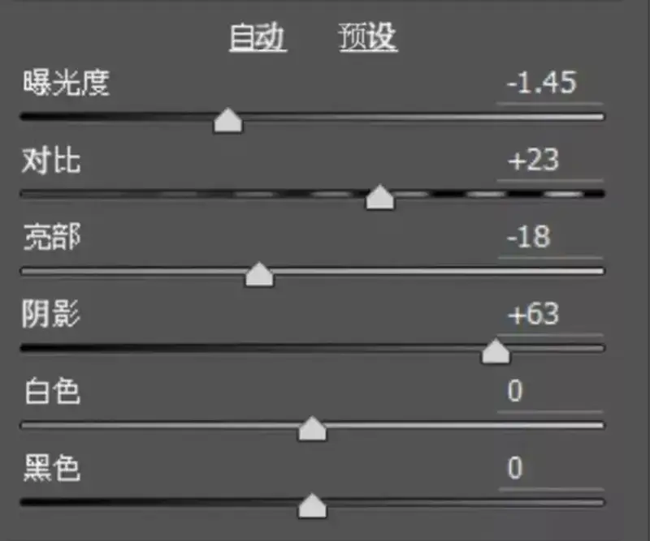
Lift the shadows
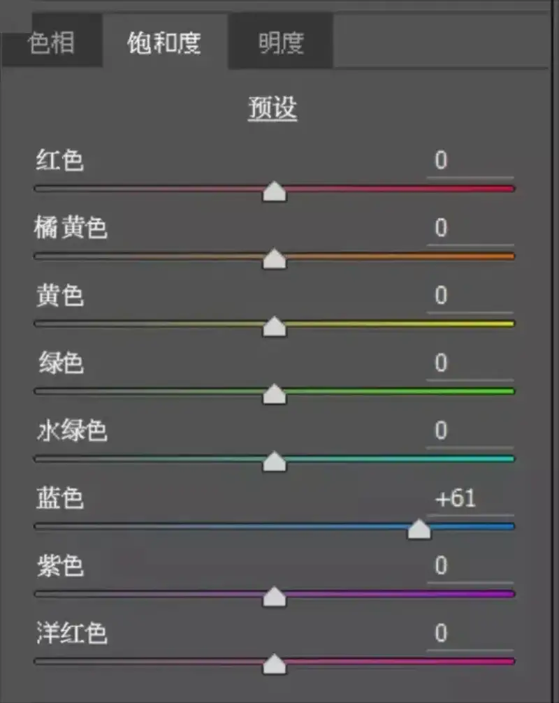
Raise blue saturation
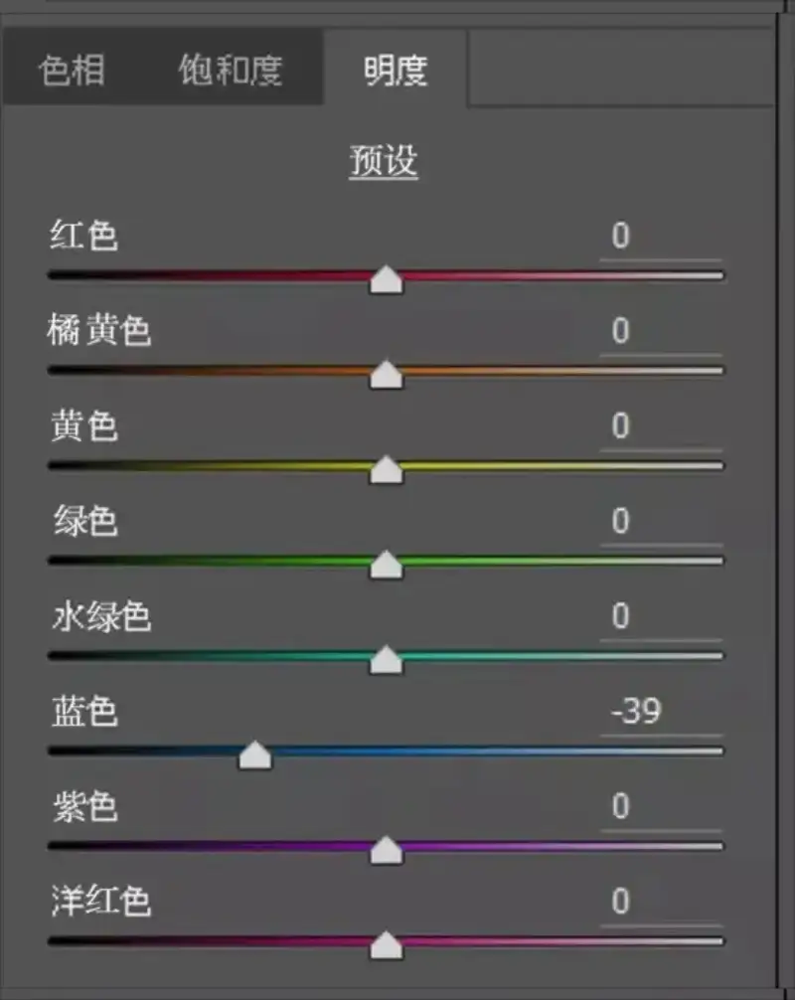
Lower blue lightness
Final result:
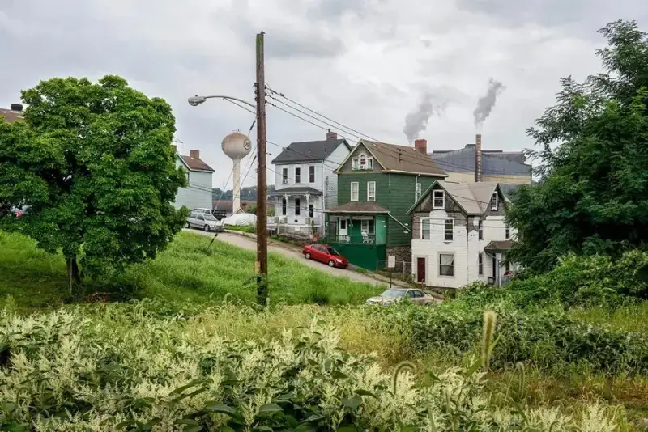
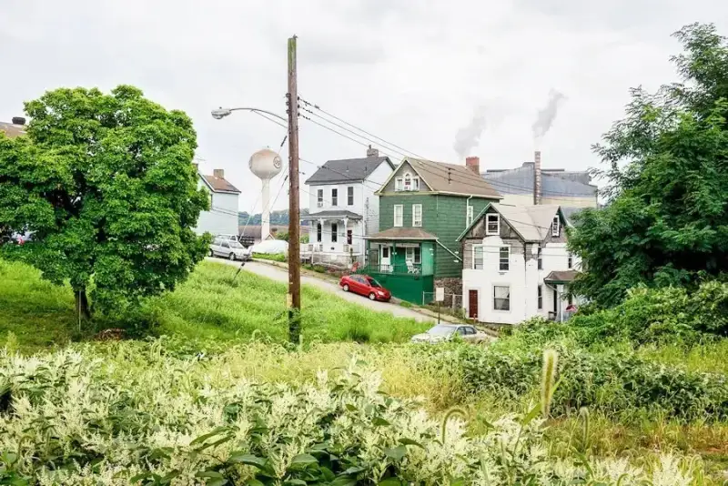
// RAW in practice: rescue an under-exposed shot //
This JPEG photo is under-exposed because the shutter speed was too fast, and it lost some detail in the dark areas. A RAW file was saved at the same time, and the shadows can be clearly adjusted back.
For example, the image below is a badly under-exposed JPEG, and all the detail seems gone.
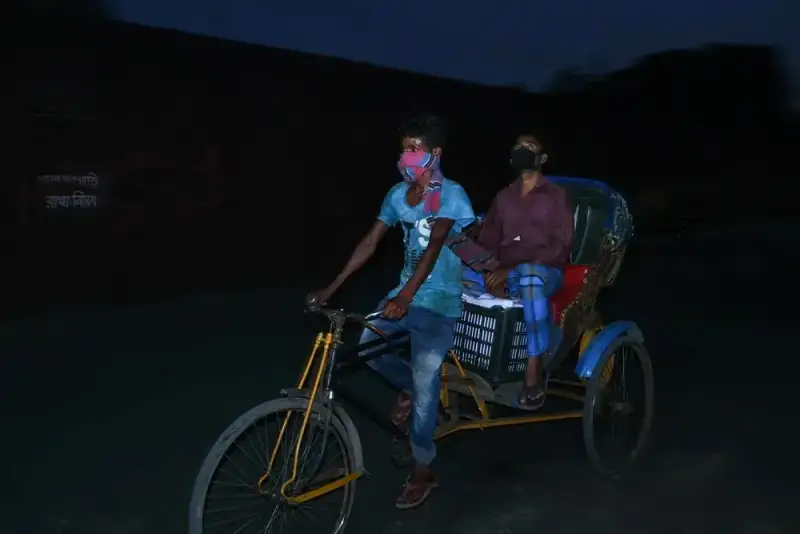
This is the RAW file of the same photo, opened in ACR. You can see it is under-exposed, and the overall detail is missing, just as in the JPEG.
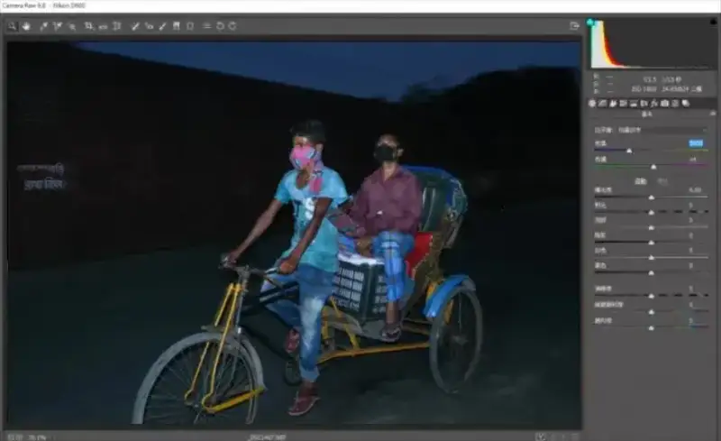
But a moderate adjustment of exposure is enough...
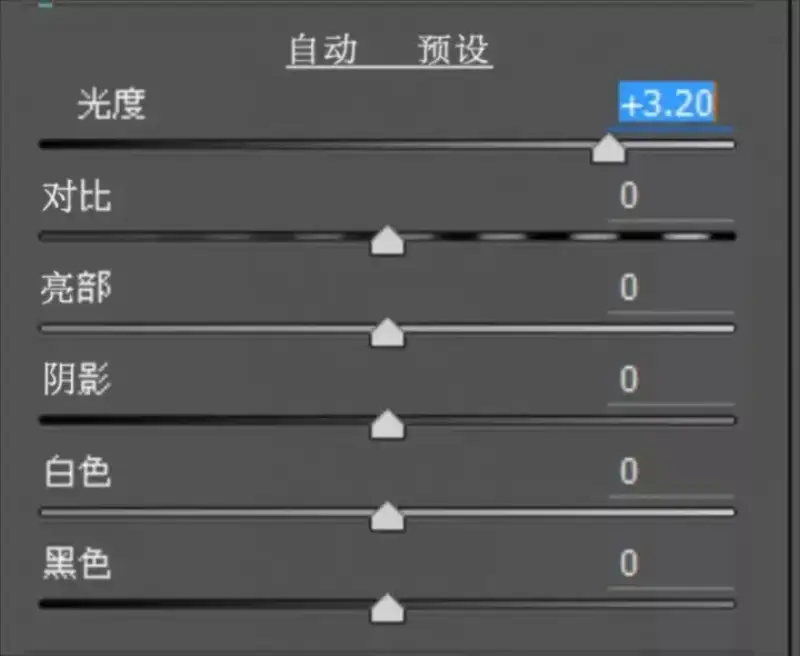
and all the overall detail comes back!
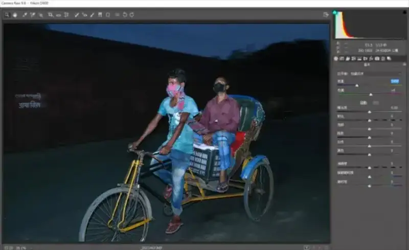
// The endless potential of RAW //
The greatest benefit of RAW is its 'lossless' quality. So you can process a photo to some point, save it, and adjust it again. The process does no harm to the photo, even if you repeat it 10 or 20 times.
In JPEG, every time you open, edit, and save the file, it causes some damage. This is especially clear in printed work.
You can open a RAW file in Adobe Camera Raw and make it look nothing like the preview on the camera. In any case, you can adjust it back in a lossless state.
How much can you adjust in Adobe Camera Raw after a single exposure? Let us try. The original: the RAW just opened.
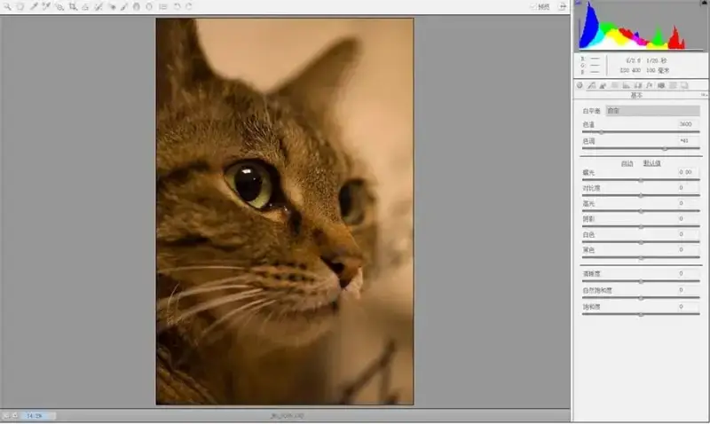
A simple adjustment gives a completely different result:
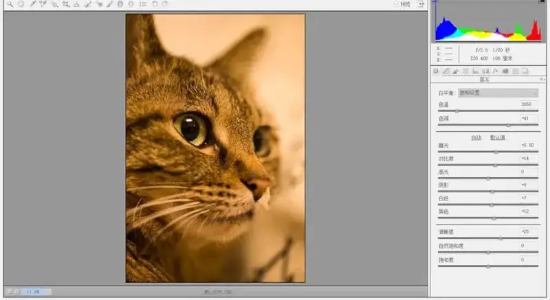
Using its lossless quality, keep adjusting:
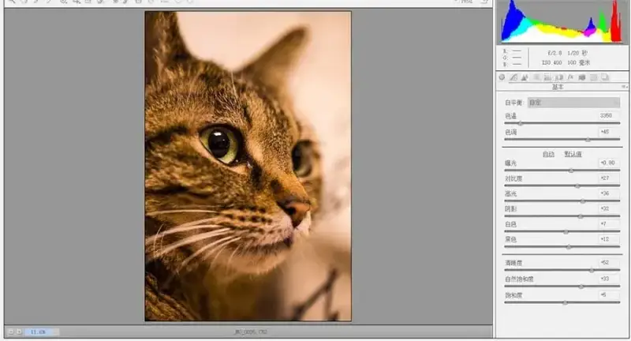
As noted, the biggest hassle with RAW is the time it takes. Once you finish a photo you are happy with, save the settings. Next time you can apply the result in one click, or make small adjustments.
In the basic controls of Adobe Camera Raw, adjustments such as white balance, highlights, shadows, and clarity are very powerful. Each takes only a few minutes to produce the result in your mind. More complex work such as color grading can also be done in ten or so minutes, thanks to the powerful features.
These are the reasons why you should still stick with RAW.
The biggest change RAW brings to a photo is the room for color work, because it stores a great deal of post-processing latitude. Most professional photographers feel what draws them to RAW is its huge color space, which lets them use their skills freely.
In color balance, when you work on a JPEG, no matter how carefully you control the color adjustment, you cannot always get the color you want. The JPEG itself lacks enough data to change.
The same control gives excellent results easily in a RAW file, simply because it stores enough data. RAW also offers a choice of color mode, and you can switch freely between sRGB, RGB1998, and Pro Photo RGB.
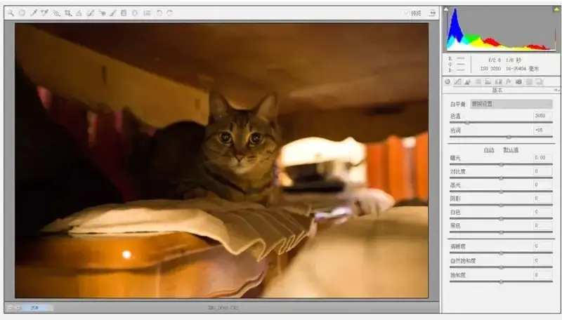
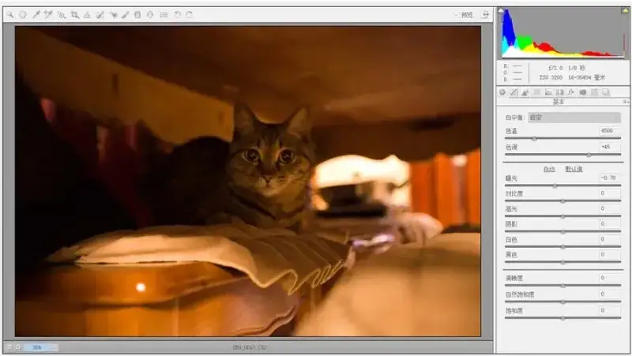
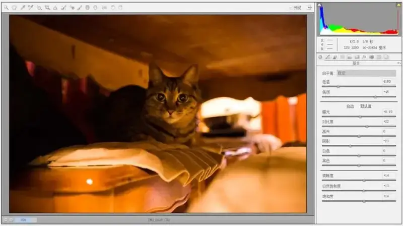
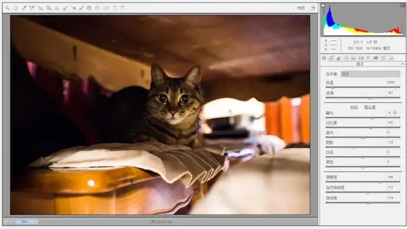
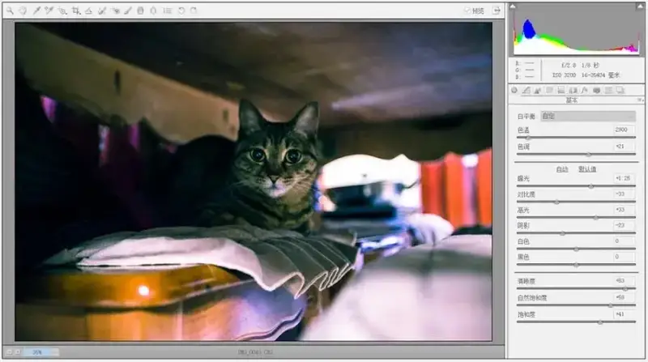
// Summary //
RAW has two strengths:
First, it offers more room for post-processing. It keeps 100 percent of the data from the camera's sensor.
Second is the future. Once you save a RAW file, you can keep working on it perfectly at any time. Who knows how you and your taste will change in a few years or decades?